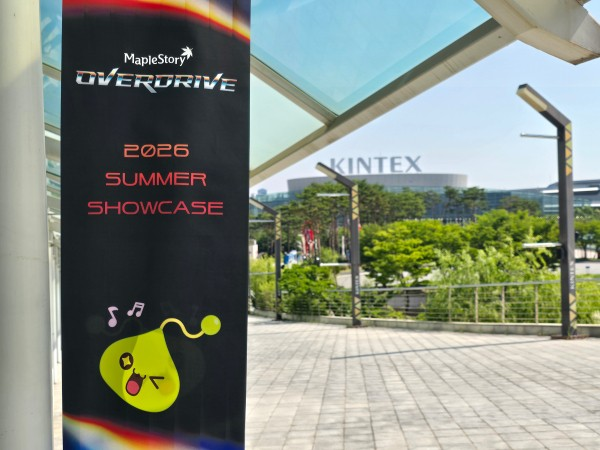
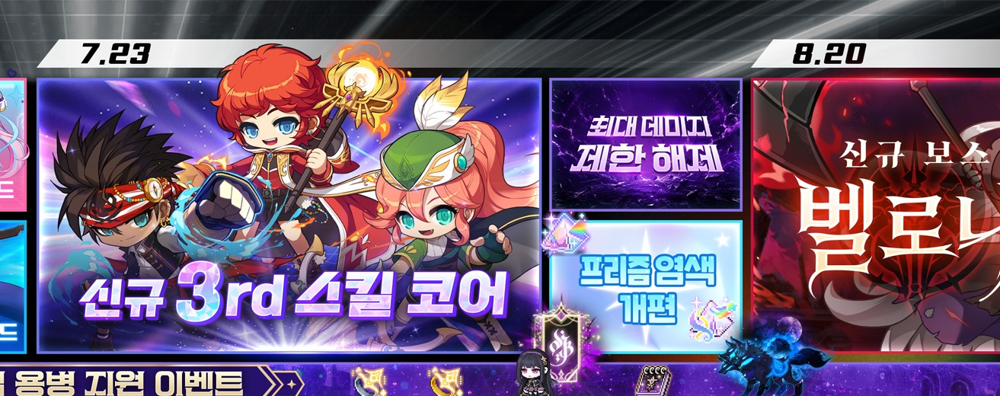

메이플스토리 7월 23일 업데이트, 세 번째 6차 스킬 코어 어떤 직업이 유리할까
지난번에 메이플스토리 여름 쇼케이스 '오버드라이브' 내용을 통째로 정리해드렸었는데요, 그때 표로 정리했던 일정 중에 7월 23일(목) '세 번째 6차 스킬 코어' 항목만 유독 짧게 넘어갔던 거 기억하시는 분들 계실 것 같아요. 6월 18일에 신규 직업이랑 시스템 개편이 워낙 크게 들어오다 보니 상대적으로 묻혔었는데, D-22 정도로 날짜가 가까워지면서 이제 슬슬 이 부분도 한 번 짚고 넘어가야 할 때가 된 거 같더라고요.
'지금까지의 변화, 그 이상으로' — 이번 여름 업데이트를 관통하는 슬로건이었죠.
이미지 출처: 메이플스토리 공식 오버드라이브 페이지

지난 6월 13일 킨텍스에서 열렸던 오버드라이브 쇼케이스 현장이에요. 이때 로드맵으로 처음 예고됐던 일정입니다.
이미지 출처: 게임뷰 현장 보도
6차 스킬 코어, 세 번째가 들어온다는 건 무슨 뜻일까
메이플스토리 6차 전직을 마치면 순서대로 오리진 스킬, 그다음 어센트 스킬이 붙는 구조인데요. 어센트 스킬은 전 직업 47개에 다 추가돼서, 보스전에서 재사용 대기시간 없이 최대 세 번까지 쓸 수 있고 사용하는 동안 잠깐 무적이 되면서 강한 한 방을 넣는 스킬이었죠. 여기까지가 지금 본섭에 이미 들어와 있는 부분이고, 7월 23일에 추가되는 게 이 다음, 세 번째 스킬 코어인 거예요.
잠깐 흐름을 짚어보면, 이 6차 스킬 코어가 하루아침에 세 개가 된 건 아니에요. 첫 번째 오리진 스킬은 2023년 7월 'NEW AGE' 업데이트에서 6차 전직이 처음 열릴 때 같이 들어왔고, 두 번째 어센트 스킬은 2025년 여름 '어셈블' 쇼케이스에서 공개돼 그해 7월에 전 직업으로 풀렸죠. 그러니까 대략 한 해에 하나씩, 여름마다 새로운 6차 스킬 코어가 추가돼 온 흐름이고, 이번 세 번째 코어도 그 연장선에 있는 셈이에요. 매년 여름 쇼케이스에서 다음 코어가 예고되는 패턴이 어느 정도 자리를 잡은 거라, 6차를 찍어둔 캐릭터가 있다면 이맘때가 스킬 한 칸이 더 생기는 시즌이라고 봐도 되겠더라고요.

공식 로드맵에 박혀 있는 '7.23 신규 3rd 스킬 코어'예요. 8월 20일 신규 보스 벨로나보다 먼저 오는 일정이죠.
이미지 출처: 메이플스토리 공식 오버드라이브 페이지
참고로 위 로드맵 이미지를 보면 세 번째 스킬 코어 옆에 '최대 데미지 제한 해제'라고 적힌 칸이 같이 보이실 텐데요. 이건 이번 오버드라이브에서 최대 데미지 상한을 10조까지 끌어올린 개편이에요. 다만 이 상한 확장은 7월 23일이 아니라 이미 6월 18일 1차 업데이트 때 적용된 부분이라, 세 번째 스킬 코어랑은 시점이 다르다는 점만 짚고 넘어갈게요. 상위 스펙 유저일수록 딜이 상한에 막히던 상황이 있었는데 그 천장을 크게 열어준 개편이라, 여기에 7월 23일 새 스킬 코어까지 더해지면 고스펙 구간에서 체감이 꽤 있을 것 같네요.
기존 스킬 코어랑 뭐가 다르길래?
이번 세 번째 코어에서 제일 눈에 띄는 포인트는 설계 방향 자체가 바뀐다는 거예요. 오리진이나 어센트는 사실 직업에 상관없이 거의 비슷한 성격의 스킬이었거든요. 어센트만 봐도 무적 시간에 강공격 넣는 구조는 47개 직업이 다 똑같이 가져갔던 거고요. 근데 이번 세 번째는 그 방식을 안 쓰고, 각 직업마다 필요한 스킬을 하나씩 따로 부여하는 쪽으로 방향을 잡았다고 해요.
구체적으로는 극딜 비중이 높은 직업에는 쿨타임이 짧은 스킬을, 반대로 평딜, 그러니까 지속딜 위주인 직업에는 쿨타임이 긴 대신 화력이 센 극딜 스킬을 얹어주는 방식이라고 하네요. 쉽게 말하면 직업마다 부족했던 구석을 메워주는 방향인 거죠. 순간 화력은 좋은데 평소 딜링이 심심했던 직업이라면 지속딜 쪽을, 반대로 꾸준히는 잘 넣는데 한 방이 아쉬웠던 직업이라면 극딜 쪽을 받게 되는 그림이라고 이해하면 될 것 같아요.
아직 라이브 전이라 정확한 스킬 이펙트는 테스트 월드가 열려야 볼 수 있어요.
그럼 어떤 직업군이 유리해질까?
여기서부터는 조심스럽게 짚어야 할 부분인데요, 7월 1일 현재까지 넥슨이 공식적으로 발표한 건 "직업별 약점을 메우는 방향"이라는 설계 원칙까지이고, 구체적으로 어느 직업이 어떤 스킬을 받는지, 스킬 이름이 뭔지는 아직 공개가 안 됐어요. 커뮤니티에 도는 예측 글들도 몇 개 봤는데 다 유저 추측 수준이라 여기서 단정해서 적어드리진 않을게요.
다만 방향성만 놓고 보면 순간 화력에 몰빵하는 스타일의 직업, 그러니까 짧은 시간에 스킬 몇 개 몰아 쓰고 긴 쿨타임을 기다리는 딜링 구조를 가진 직업이라면 이번엔 반대로 짧은 쿨타임 스킬을 받아서 평소 딜 사이클이 좀 더 촘촘해질 가능성이 있어 보여요. 반대로 평소엔 꾸준하게 딜을 넣다가 한 방이 아쉬웠던 지속딜형 직업이라면 긴 쿨타임의 강력한 극딜 스킬 하나가 새로 생기는 쪽으로 체감이 갈 것 같고요. 결국 내 직업이 지금 어느 쪽에 더 가까운 딜링 스타일인지에 따라 받게 되는 스킬의 성격도 달라질 거란 얘기죠.
다만 전투력 상승 폭 자체는 전 직업이 비슷하게 맞춘다고 공식적으로 밝힌 부분이라, 이번 코어로 특정 직업만 확 치고 나가는 그림은 아닐 거 같아요. 어떤 직업은 화력이 오르고 어떤 직업은 소외되는 게 아니라, 다들 고만고만하게 한 걸음씩 채워지는 느낌에 가깝겠네요.
| 구분 | 기존 오리진·어센트 스킬 | 세 번째 6차 스킬 코어(7/23) |
|---|---|---|
| 설계 방향 | 직업 상관없이 공통 구조 | 직업별 맞춤 스킬 부여 |
| 배분 기준 | 전 직업 동일 스킬 | 극딜형은 짧은 쿨타임 / 평딜형은 긴 쿨타임 극딜기 |
| 전투력 상승폭 | - | 전 직업 비슷하게 조정 🔍 밸런스 세부 확인 |
| 구체 스킬명·대상 직업 | 공개 완료(오리진·어센트) | 미공개 🔍 테스트월드·업데이트 노트 확인 |
※ 최대 데미지 상한 10조 확장은 별개 항목이에요. 로드맵에 스킬 코어 옆에 같이 그려져 있어 헷갈리기 쉬운데, 이건 6월 18일에 이미 적용된 개편이고 세 번째 스킬 코어는 7월 23일이라 적용 시점이 다르니 참고하시면 좋겠습니다.
지금 미리 챙겨두면 좋은 것
세부 스킬이 아직 안 나왔다고 손 놓고 기다리기만 하기엔 좀 아쉬우니까, 지금 해둘 수 있는 준비를 짚어볼게요. 새 스킬 코어가 열리면 결국 강화가 필요할 텐데, 6차 스킬 코어 강화는 솔 에르다와 솔 에르다 조각을 소모하거든요. 그래서 미리 솔 에르다 조각을 넉넉히 모아두면 코어가 열렸을 때 바로 레벨을 올릴 수 있어요. 마침 이번 오버드라이브에서 솔 에르다 보유 상한도 30개까지 늘어난 상태라, 여유 있게 쟁여두기에도 나쁘지 않은 타이밍이죠.
그리고 6차 전직 자체를 아직 안 하신 분이라면 이참에 260레벨을 찍고 6차를 열어두는 걸 먼저 추천드려요. 세 번째 스킬 코어도 결국 6차를 마쳐야 받을 수 있는 거니까요. 마침 지금은 하이퍼 버닝 같은 육성 지원이 붙어 있는 시즌이라 레벨 올리기도 평소보다 수월한 편이라, 6차가 아직 먼 캐릭터를 키우는 중이었다면 이 기회에 속도를 내두면 7월 23일을 더 알차게 맞을 수 있을 것 같아요.
일정 다시 한 번 정리하면
오버드라이브 로드맵 통으로 다시 짚으면 6월 18일 신규 직업 레테와 시스템 개편, 7월 23일 세 번째 6차 스킬 코어, 8월 20일 신규 보스 벨로나 순서예요. 6월 18일 업데이트는 이미 라이브로 적용된 상태라 보스 제한시간 단축이나 유니온 개편 같은 건 지금 바로 체감하실 수 있고, 이제 남은 큰 이벤트가 세 번째 스킬 코어랑 벨로나 두 개인 거죠.
개인적으로는 직업별 맞춤 스킬이라는 방향 자체가 반가운 편이에요. 지금까지는 코어를 강화해도 결국 다 같은 스킬을 강화하는 거라 직업 간 개성이 좀 옅어지는 느낌이 있었는데, 이번엔 진짜 내 직업만의 약점을 메워주는 스킬이 생긴다는 거니까요. 다만 세부 내용이 아직 안 나온 만큼, 7월 18일쯤 테스트 월드가 먼저 열리면 거기서 실제 스킬 구성이 공개될 가능성이 높아 보이니 그때 한 번 더 확인하고 오는 게 제일 확실할 것 같아요.
세 번째 코어가 열리면 이 스킬창에 자리 하나가 더 늘어나는 셈이에요.
세 번째 6차 스킬 코어 정리
한마디로 7월 23일(목)에 세 번째 6차 스킬 코어가 추가되고, 이번엔 오리진·어센트와 달리 직업별로 다른 스킬을 받는 맞춤형 설계라는 게 지금까지 공식적으로 확인된 사실이에요. 구체적으로 내 직업이 어떤 스킬을 받는지는 아직 미공개라 지금 단정하기보다는, 테스트 월드나 정식 업데이트 노트가 뜨는 대로 다시 한 번 자세히 들고 올게요. 극딜형이든 평딜형이든 결국 부족한 부분 하나씩은 채워주는 방향이니까, 큰 걱정 없이 3주 정도 기다려보시면 좋을 것 같아요.
✔ 메이플스토리 같이 보기 좋은 내용
· 메이플스토리 여름 쇼케이스 예고 — 확정 vs 루머 정리(쇼케이스 전)
· 오버드라이브 쇼케이스 총정리 글(같은 로드맵을 다룬 글이에요 — 발행 시 링크 연결)